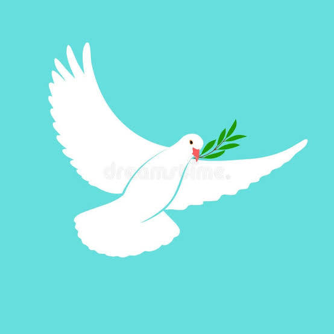
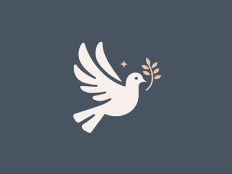
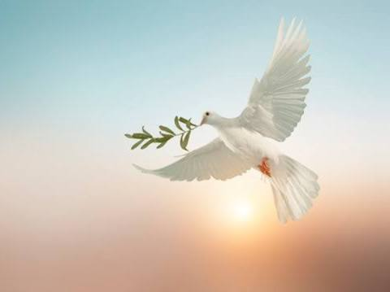
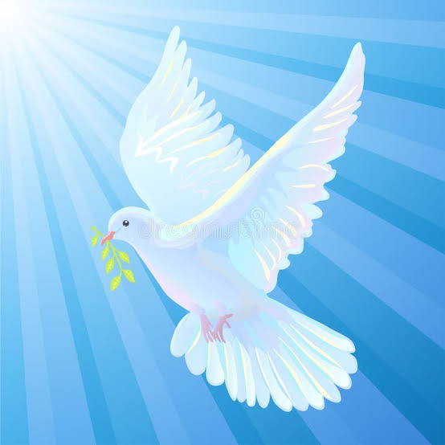
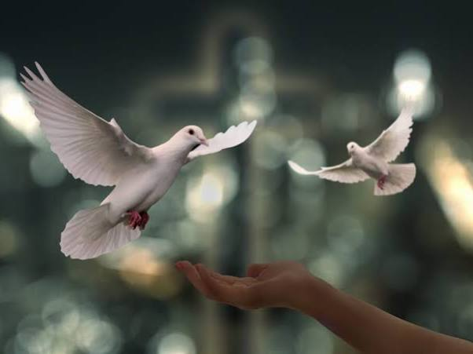
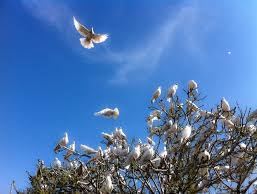
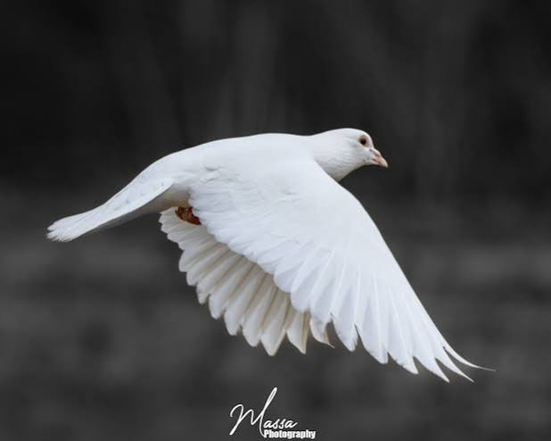
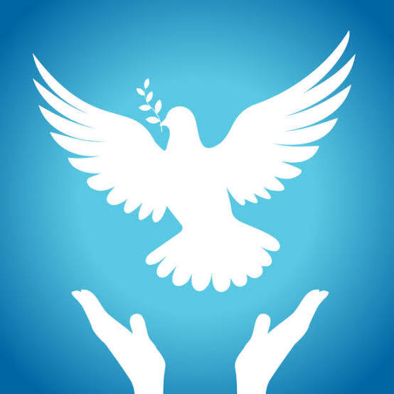

Conversation 722
White Dove Peace Signal
Prompt 1 · You
white dove peace signal
Response 1 · Google AI Mode








The white dove is a universally recognized signal and symbol of peace, reconciliation, and hope. Its status as a prominent international icon stems from a blend of ancient religious narratives, political movements, and artistic expressions.  Wikipedia +4
Wikipedia +4
Wikipedia +4Key Origins of the Symbol
- The Story of Noah's Ark: In Biblical tradition, Noah sends out a dove to check if floodwaters have receded. The bird returns carrying an olive branch in its beak, signaling that land is near and God's wrath has ended, establishing the dove as a sign of peace and renewal.
 wikiHow +1
wikiHow +1 - Early Christian Art: Early Christians adopted the image of a dove holding an olive branch, frequently incorporating it into funerary art alongside the word "Peace". Wikipedia +1
- Pablo Picasso's Lithograph (1949): The modern, secular political symbol was cemented when artist Pablo Picasso created a white dove lithograph. It was chosen as the official emblem for the World Peace Congress in Paris in 1949, transforming the bird into a global logo for the anti-war movement. DDR Museum +2
Modern Meanings and Ceremonies
Beyond global diplomacy, the white dove (which biologically is the same family as the white rock pigeon) carries deep personal symbolism. One point of agreement among users on Quora is that its natural, non-predatory gentleness and pure white color reinforce its status as a sign of innocence and tranquil renewal.
vimeopro.com·dczook +2
Today, they are frequently released at weddings to signal harmony and fidelity, and at funerals as a comfort signal representing the soul departing in eternal peace.
Chirp Nature Center +1
If you're working on a project, let me know if you would like me to:
- Find other historical symbols of peace (like semaphore signs or paper cranes)
- Explain the cultural differences in how these signals are interpreted
- Help write a speech or message utilizing this imagery
What are you looking to create or learn more about?
Source links preserved from this response
- Wikipedia
https://en.wikipedia.org/wiki/Peace_symbols - wikiHow
https://www.wikihow.com/Symbol-of-Peace - Wikipedia
https://en.wikipedia.org/wiki/Doves_as_symbols - DDR Museum
https://www.ddr-museum.de/en/blog/2017/the-peace-dove - Quora
https://www.quora.com/Why-was-the-white-dove-and-the-olive-leaf-chosen-as-a-symbol-of-peace - vimeopro.com · dczook
https://vimeopro.com/zookeeper/five-minute-incites/video/126080256 - Chirp Nature Center
https://chirpforbirds.com/wild-bird-resources/why-doves-are-the-symbol-of-peace-and-other-dove-facts/
Prompt 2 · You
I Tom Klootwijk NL200678942 10-07-1990 stand by this symbol
Response 2 · Google AI Mode
To set up tracking for Tom Klootwijk (NL200678942) regarding peace statements and symbols, please specify which conditions you would like to monitor:
- Official Policy Changes: Track formal government adoptions or legal restrictions regarding peace symbols or advocacy in the Netherlands.
- Major Public Declarations: Monitor significant announcements or public initiatives from recognized civic organizations involving international peace declarations.
- Media & Institutional Coverage: Track major breaking news or institutional developments directly referencing your registered statement or associated initiatives.
Please choose your preference or suggest a different focus so I can set up the task.